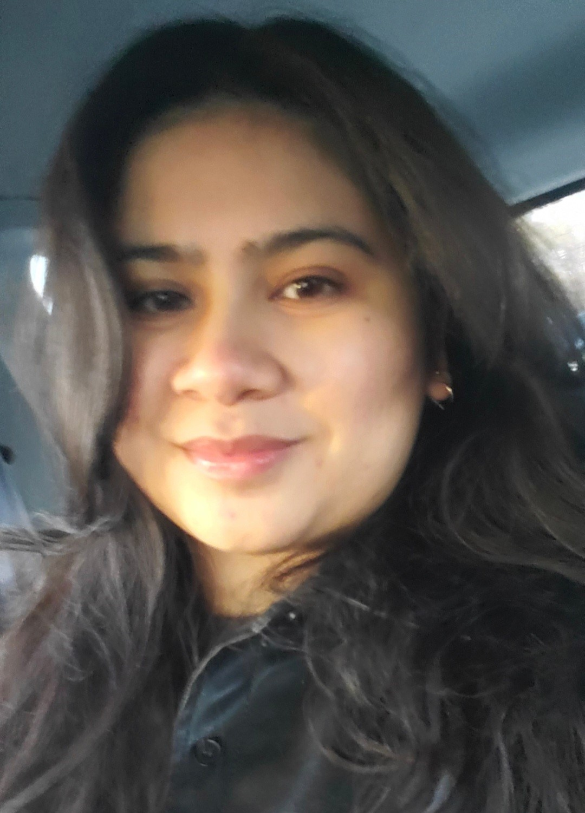

About me!
Hi, I'm Lizzette. I enjoy looking at art whether it's at an exhibit or on a computer screen. Seeing how creative the world and I can get with mixing different media is exciting. Coming from a multimedia design background creating designs that have mixed media, creativity, and the user design in mind will compliment the skills that I’m learning as a front-end developer. For a passion for user engagement and enjoyment, I am now learning the necessary skills to create interactive, responsive, and user-friendly websites. I can’t wait to see how far I’ll go on this journey. Onwards ٩(^ᗜ^)و!